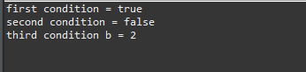
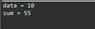
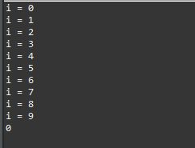
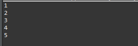
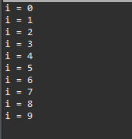
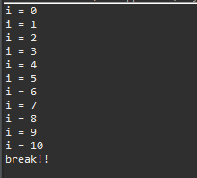
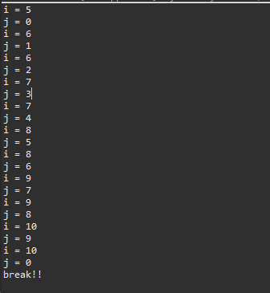
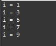

こんにちは。明月です。
この投稿は制御文に関する説明です。
制御文とはプログラムの流れを制御するか繰り返しを決定するキーワードという意味です。
例えば、関係演算子か論理演算子を通って二つの変数でブール(Boolean)の値によってtrueの時には処理や、falseの時に処理を制御すること、またその処理は繰り返して何回に処理することを制御するという意味です。
この制御文は始めC言語から派生した文法でJavaやC#などのほぼすべてのプログラム言語が表現することは文法として差異があるかもしれませんが、処理方法は同じです。
制御文は処理する方法に関して条件文、選択文、繰り返し文、分岐文ということに区分になります。
if ~ else if ~ else
if ~ else if ~ elseはブール(Boolean)の値によって処理する条件文です。
① if(条件)
文章 ; => 条件が「true」なら文章を実行する。
② if(条件)
文章1; => 条件が「true」なら文章1を実行するｓ，「faｌse」なら文章2(else)を実行する。
else
文章2;
③ if(条件1)
文章1; => 条件1が「true」なら文章1を実行するし、「false」なら次の条件を検査する。
else if(条件2)
文章2; =>条件2が「true」なら文章2を実行するし、「false」なら文章3を実行する。
else
文章3;

要約してif文の条件が真(true)なら当該なスタックを実行する構造です。最後にelseがある場合、ifやelse ifがすべて偽ならelseのスタックを実行されます。
public class Test {
// 実行関数
public static void main(String[] args) {
// ブール値を設定 = true
boolean a = true;
// 変数aがtrueなら
if (a) {
// コンソール出力
System.out.println("first condition = true");
}
// ブール値を設定 = false
a = false;
// 変数aがtrueなら
if (a) {
// コンソール出力
System.out.println("second condition = true");
// 変数bがfalseなら
} else {
// コンソール出力
System.out.println("second condition = false");
}
// 変数bの値に2を設定
int b = 2;
// 変数bが1なら
if (b == 1) {
// コンソール出力
System.out.println("third condition b = 1");
// 変数bが2なら
} else if (b == 2) {
// コンソール出力
System.out.println("third condition b = 2");
// 変数bが1または2ではなければ
} else {
// コンソール出力
System.out.println("third condition = false");
}
}
}

上の例を説明すると始めの条件でaの変数の条件を確認します。
aのブール値がtrueなのでif(a)のスタックが実行されます。なのでコンソールには「first condition = true」のメッセージがコンソールに表示されます。
次の条件式でif~elseですが、変数aがtrueならif(a)のスタックが実行されるし、falseならelseのスタックが実行されます。aの値をfalseに設定したので、「second condition = false」のメッセージがコンソールに表示されます。
最後は変数の関係演算子でtrue、falseの値を計算してスタックが実行されるように設定しました。
bの値は2なのでelse if(b==2)のスタックが実行されます。なので「third condition b = 2」がコンソールに表示されます。
switch ~ case
switch ~ caseの選択文でif ~ else if ~ elseと似ている処理に行います。
switch(数式) {
case 値1:
文章1;
break;
case 値2:
文章2;
break;
case 値3:
文章3;
break;
...
default:
文章;
break;
}

switch ~ caseで重要なキーワードはbreakです。switchの条件数式と合う値を探してスタックが実行されますが、breakがなければ当該caseスタックだけではなく、当該なcaseの以下のスタックもすべて実行してしまうことになります。
public class Test {
// 実行関数
public static void main(String[] args) {
// 変数dataに10を設定
int data = 10;
// dataの条件変数
switch (data) {
// dataが10の場合
case 10:
// コンソール出力
System.out.println("data = 10");
// switchを抜け出す。
break;
// dataが20の場合
case 20:
// コンソール出力
System.out.println("data = 20");
// switchを抜け出す。
break;
// caseで合う値がない場合、
default:
// コンソール出力
System.out.println("default");
// switchを抜け出す。
break;
}
// sum変数宣言
int sum = 0;
// dataの条件変数
switch (data) {
// dataが10の場合
case 10:
// sum変数に10を足す。
sum += 10;
// breakがないので次のスタックに移る。
// dataが9の場合
case 9:
// sum変数に9を足す。
sum += 9;
// breakがないので次のスタックに移る。
// dataが8の場合
case 8:
// sum変数に8を足す。
sum += 8;
// breakがないので次のスタックに移る。
// dataが7の場合
case 7:
// sum変数に7を足す。
sum += 7;
// breakがないので次のスタックに移る。
// dataが6の場合
case 6:
// sum変数に6を足す。
sum += 6;
// breakがないので次のスタックに移る。
// dataが5の場合
case 5:
// sum変数に5を足す。
sum += 5;
// breakがないので次のスタックに移る。
// dataが4の場合
case 4:
// sum変数に4を足す。
sum += 4;
// breakがないので次のスタックに移る。
// dataが3の場合
case 3:
// sum変数に3を足す。
sum += 3;
// breakがないので次のスタックに移る。
// dataが2の場合
case 2:
// sum変数に2を足す。
sum += 2;
// breakがないので次のスタックに移る。
// dataが1の場合
case 1:
// sum変数に1を足す。
sum += 1;
}
// コンソール出力
System.out.println("sum = " + sum);
}
}

上の例を見ると始めのswitch ~ caseはdataの値によってコンソールにメッセージが表示されることを確認できます。
しかし、二つ目のswitch ~ caseはcaseスタックにbreakがないのでcase 10からcase 1までのすべてのスタックが実行されます。なのでsumの変数のデータは10から1まで足した値になります。
for
for文はプログラム制御文法でifと一緒に一番よく使う制御文ではないかと思います。
for文の条件式はセミコロン(;)を区分で初期値、条件式、増減式の値を設定します。
for (初期値; 条件式; 増減式) {
文書;
}
初期値には条件式で使う変数を設定するし、その初期値の変化を増減式に設定、条件式で格好にあるスタックを実行するかを判断する構成になります。
条件式の判断はif条件式みたいにブール(Boolean)の値で判断することになります。
public class Test {
// 実行関数
public static void main(String[] args) {
// 初期値iは0に設定する。
// 条件式のi<10の計算でtrueなら次のスタックを実行する。
// 増減式は次のスタック領域が実行した後、i++を実行する。
for (int i = 0; i < 10; i++) {
// コンソール出力
System.out.println("i = " + i);
}
// 変数宣言
int a = 0;
// 条件式と増減式は必ず入力する必要はない。
// しかし、可読性のため初期値と増減式を使うことをお勧めです。
for (; a < 1;) {
// コンソール出力
System.out.println("a = " + a);
// 変数増加
a++;
}
}
}

もし条件式でfalseの値が出る条件を構成できなければ、無限ループ、つまりforの繰り返しが終わらない状況になります。
public class Test {
// 実行関数
public static void main(String[] args) {
// i < 1は永遠にtrue、つまり無限ループ状態になるため、このプログラムは終了しない。
for (int i = 0; i < 1; i--) {
// コンソール出力
System.out.println("i = " + i);
}
}
}
javaのfor文の場合はデザインパターンのiteratorパターンを実装することが可能です。配列、リスト、ストリーム(stream)の場合、配列の一つのデータを受け取って(.next()関数)、nullを確認して(.has()関数)、nullではない場合、スタック領域が実行するパターンを実装することができます。
詳細なことは後配列やlistを説明する時に説明します。
public class Test {
// 実行関数
public static void main(String[] args) {
// 配列設定
int array[] = {1, 2, 3, 4, 5};
// iteratorパターン
for (int item : array) {
// コンソール出力
System.out.println(item);
}
}
}

while
while文はfor文で初期式と増減式を取り除いて、条件式だけある繰り返し文です。
while (条件式) {
文書;
}
whileの場合は初期式と増減式がないので無限ループになることを常に気を付けなければならないです。
public class Test {
// 実行関数
public static void main(String[] args) {
// 初期変数値
int i = 0;
// i<10が真(true)ならスタック領域を実行
while (i < 10) {
// コンソール出力
System.out.println("i = " + i);
// i変数の値を増加
i++;
}
}
}

do ~ while
do ~ whileはwhileと似てますがスタック領域と条件式が裏返しています。
つまり、whileは条件式を確認(true、false)してスタック領域を実行しましたが、do ~ whileは先にスタック領域を実行して条件式で繰り返すか判断する文法です。
public class Test {
// 実行関数
public static void main(String[] args) {
// 初期変数値
int i = 0;
do {
// コンソール出力
System.out.println("i = " + i);
// i変数値増加
i++;
// i<10が真(true)なら繰り返す。
} while (i < 10);
// 変数再設定
i = 1000;
do {
// コンソール出力
System.out.println("i = " + i);
// i変数値を増加
i++;
// i<10が真(true)なら繰り返す。
} while (i < 10);
// do ~ whileは必ず一回は実行するため、初めから条件式が偽(false)でも一回は実行する。
}
}

break
breakはswitch ~ caseで少し説明した分岐文です。breakは実はforやwhile、do~whileともっと近い分岐文です。
繰り返し文は条件式によって繰り返す回数が決めていますが、条件式ではなく特定条件式によって繰り返すことを抜け出す時に使う制御文です。
public class Test {
// 実行関数
public static void main(String[] args) {
// 変数宣言
int i = 0;
// 条件式にtrueの値を入れれば無限ループになる。
while (true) {
// iが10より大きい場合。
if (i > 10) {
// コンソール出力
System.out.println("break!!");
// whileのループを抜け出す。
break;
}
// コンソール出力
System.out.println("i = " + i);
// iを1増加
i++;
}
}
}

二重三重の繰り返しの場合、繰り返し文にラベルを指定してbreakを通って特定繰り返しを抜け出すことができます。
ラベルが指定されてない場合は違い繰り返しを抜け出します。
public class Test {
// 実行関数
public static void main(String[] args) {
// 変数宣言
int i = 0;
// 条件式にtrueの値を入れれば無限ループになる。
// 繰り返し文前にラベルを指定することができる。ラベル名:test1
test1: while (true) {
// 二重繰り返し。ラベル:test2
test2: for (int j = 0; j < 10; j++) {
// iが10より大きい場合。
if (i > 10) {
// コンソール出力
System.out.println("break!!");
// whileのtest1を抜け出す。
break test1;
}
// コンソール出力
System.out.println("i = " + i);
System.out.println("j = " + j);
// jを2に割った残りが0の場合、つまり偶数の場合にiを増加
if (j % 2 == 0) {
i++;
}
}
}
}
}

ラベルを指定してbreakを設定することは可読性によくないのでお勧めではありません。関数を利用して分岐別に分けることが文法としてよいです。
continue
continueの文法はbreakと似てます。差異点はbreakは繰り返しを抜け出すことならcontinueの場合は実行しているスタックだけ飛ばすことです。
public class Test {
// 実行関数
public static void main(String[] args) {
// 0から9まで繰り返します。
for (int i = 0; i < 10; i++) {
// iを2で割った残りが0の場合、つまり偶数の場合にiを増加
if (i % 2 == 0) {
// forの条件式に移動。
continue;
}
// コンソール出力
System.out.println("i = " + i);
}
}
}

上の例はfor文で0から9まで繰り返します。continue文でスタック実行が飛ばすので、i%2の場合、つまり偶数の場合はコンソール出力をしてないので、奇数だけコンソール出力します。
ここまで制御文に関する説明でした。
ご不明なところや間違いところがあればコメントしてください。
- [Java] 15. 列挙型(バイナリデータビット演算子の使用例)2019/08/23 19:46:10
- [Java] 14. オブジェクト指向プログラミング(OOP)の4つ特性(カプセル化、抽象化、継承、多相化)2019/08/22 20:08:37
- [Java] 13. 抽象クラス(abstract)と継承禁止(final)2019/08/22 00:06:20
- [Java] 12. インタフェース(interface)2019/08/20 23:46:23
- [Java] 11. StringのhashCodeとequals、そしてtoStringの再定義(override)2019/08/20 00:42:04
- [Java] 10. メモリの割り当て(stackメモリとheapメモリ、そしてnew)とCall by reference(ポインタによる参照)2019/08/07 20:53:34
- [Java] 9. アクセス修飾子とstatic2019/08/06 20:22:48
- [Java] 8. クラスの継承とthis、superキーワードの使い方2019/08/05 23:22:58
- [Java] 7. クラスを作成する方法(コンストラクタを作成方法)2019/08/02 22:45:42
- [Java] 6. 関数の使い方(関数のオーバーロードと再帰的な方法について)2019/08/01 20:40:40
- [Java] 5. 配列とリスト(List)、マップ(Map)の使い方2019/07/26 23:25:58
- [Java] 4. 制御文2019/07/25 23:37:36
- [Java] 3. 演算子2019/07/25 23:38:36
- [Java] 2. 変数と定数の宣言方法、そして原始データタイプとクラスデータタイプの差異2019/07/24 23:12:32
- [Java] 1. Javaとは？、Javaインストール、Eclipseインストール2019/07/24 23:03:21
- [C#] 58. ウィンドウフォーム(Window form)を作成する方法、そしてウィンドウメッセージとキュー2021/10/27 20:35:44
- [Design pattern] 2-3. ブリッジパターン(Bridge pattern)2021/10/27 20:32:21
- [Design patten] 2-2. コンポジットパターン(Composite pattern)2021/10/27 20:30:54
- [Design pattern] 2-1. アダプターパターン(Adapter pattern)2021/10/26 19:12:40
- [Project design] プログラム最終テスト - ST(System test(Standard, Scenario))2021/10/26 19:10:07
- [Project design] プログラム結合テスト - IT(Integration test)2021/10/25 20:12:17
- [Python] Seleniumライブラリを使う方法(自動ウェブテスト、ウェブスクレイピング)2021/10/25 19:29:00
- [Design pattern] 1-5. プロトタイプパターン(Prototype pattern)2021/10/22 19:35:45
- [Project design] プログラム検証とテスト - Unitテスト2021/10/22 19:34:09
- [C#] 57. コーティング規約2021/10/21 18:57:02
- [C#] 56. 値の初期化及び基本データ値(default)を設定する方法、そして原始データのnull処理、?と??の使い方2021/10/21 18:54:41
- [C#] 55.namespaceとusing、そしてpartialの使い方2021/10/21 18:51:39
- [C#] 54. Reflection機能を使い方 - Attribute2021/10/20 19:29:31
- [Project design] プログラム制作(コーディング) - クラス作成方法2021/10/20 19:28:09
- [C#] 53. Reflection機能を使い方 - Propertyとevent2021/10/19 21:02:58